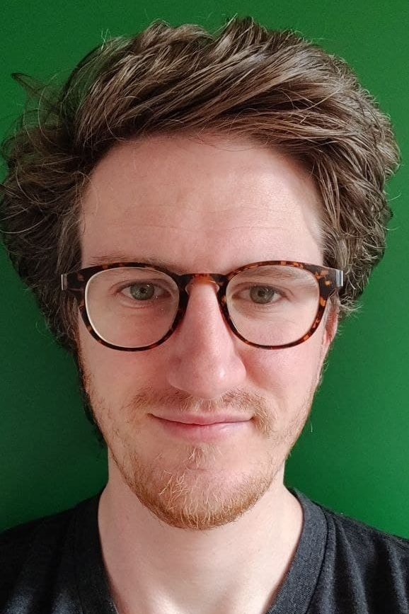

👨
I am Brecht, passionate about people and informatics.
👫
My dad is a system engineer and my mom is a psychologist.
🖱️
I grew up with computers, playing video games, thinking about how games
influence behaviour and how behaviour influences code. I think it's
amazing how humanity has built virtual worlds whose rules are dictated
by how we think.
✈️
I love to travel and experience how people live in different settings.
💻 TEKsystems:
As a recruiter for open-source system engineers I got to talk to a lot
of professionals. Not just system engineers but project managers,
developers, testers etc. I loved exploring the vast world of IT in
Belgium through these conversations. It was easy for me to take genuine
interest in their jobs. I realised I wanted what they had.
After a year I started coding html on an app called mimo, where I also
got a taste of python, PHP, CSS and JavaScript.
🍁 Canada:
I went to Work and travel in Canada with my girlfriend (now wife). I had
time to think about which direction to take with my career. I tried
security on Udemy as well as python for data science.
🔎
After Canada I looked into various jobs and training programs
and found Switchfully. By then I knew I wanted to code programs. I want
to be a backend developer.
When comparing .NET and Java, two of the most popular languages, I chose
Java because of the companies that use it. EG: Colruyt.
📖
I'm now leaning JavaScript to keep growing my skills as it is
also an object oriented programming language and used for many websites.
🪴
I want a life where I can face new challenges every day. Where I
get to work my way through complex problems whilst keeping the bigger
picture in mind. I believe software development is this life.
👨💻
I plan to be a junior java enterprise developer by Q4 2022 working in a
medium to large environment to learn and improve my skills. Taking on
any project that helps my company.
Switchfully is the best road towards this goal as they work with
top-tier companies such as Colruyt, FOD Fin and FOD Economie.
🛒
Colruyt especially is of interest to me as I've always been a fan of
their brand and way of working.
- As a psychology student I got to know them as one of the most
excellent employers in Belgium.
- As a recruiter I got to know them as a great IT environment.
- Colruyt has always been on my radar and this will not change.